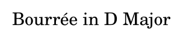
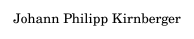
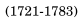

| 037 | 
candidate #187 | x=1.465
y=-26.559
outside | — | rejected before PCA: farther than 2 staff spaces from staff/recognized object |
| 038 | 
candidate #188 | x=1.285
y=-27.416
outside | — | rejected before PCA: farther than 2 staff spaces from staff/recognized object |
| 039 | 
candidate #189 | x=1.842
y=-26.491
outside | — | rejected before PCA: farther than 2 staff spaces from staff/recognized object |
| 040 | 
candidate #190 | x=2.026
y=-31.303
outside | — | rejected before PCA: farther than 2 staff spaces from staff/recognized object |
| 041 | 
candidate #192 | x=2.759
y=-27.416
outside | — | rejected before PCA: farther than 2 staff spaces from staff/recognized object |
| 042 | 
candidate #133 | x=2.604
y=1
legal | 1/1: conf=0.092 d=9.864 [restwhole]
1/2: conf=0.092 d=9.864 [resthalf]
1/8: conf=0.043 d=22.261 [rest8th]
1/16: conf=0.041 d=23.355 [rest16th]
1/4: conf=0.041 d=23.673 [restquarter] | rejected by PCA |
| 043 | 
candidate #193 | x=3.659
y=-27.485
outside | — | rejected before PCA: farther than 2 staff spaces from staff/recognized object |
| 044 | 
candidate #134 | x=4.992
y=6.024
legal | 1/32: conf=0.383 d=1.614 [rest32nd]
1/16: conf=0.319 d=2.139 [rest16th]
1/4: conf=0.220 d=3.552 [restquarter]
1/8: conf=0.117 d=7.572 [rest8th]
1/1: conf=0.088 d=10.337 [restwhole] | rejected by PCA |
| 045 | 
candidate #137 | x=4.805
y=-2.115
legal | 1/4: conf=0.244 d=3.099 [restquarter]
1/32: conf=0.200 d=4.009 [rest32nd]
1/16: conf=0.184 d=4.425 [rest16th]
1/8: conf=0.175 d=4.716 [rest8th]
1/1: conf=0.107 d=8.367 [restwhole] | rejected by PCA |
| 046 | 
candidate #138 | x=4.801
y=12.1
legal | 1/4: conf=0.212 d=3.712 [restquarter]
1/32: conf=0.211 d=3.747 [rest32nd]
1/16: conf=0.194 d=4.165 [rest16th]
1/8: conf=0.140 d=6.128 [rest8th]
1/1: conf=0.123 d=7.159 [restwhole] | rejected by PCA |
| 047 | 
candidate #136 | x=5.237
y=5.205
legal | 1/4: conf=0.249 d=3.01 [restquarter]
1/32: conf=0.230 d=3.354 [rest32nd]
1/16: conf=0.147 d=5.816 [rest16th]
1/8: conf=0.108 d=8.278 [rest8th]
1/1: conf=0.074 d=12.436 [restwhole] | rejected by PCA |
| 048 |
candidate #142 | x=6.244
y=-4.081
legal | 1/8: conf=0.187 d=4.353 [rest8th]
1/16: conf=0.153 d=5.547 [rest16th]
1/4: conf=0.132 d=6.563 [restquarter]
1/32: conf=0.126 d=6.932 [rest32nd]
1/1: conf=0.122 d=7.213 [restwhole] | rejected by PCA |
| 049 | 
candidate #194 | x=6.377
y=-21.518
outside | — | rejected before PCA: farther than 2 staff spaces from staff/recognized object |
| 050 | 
candidate #195 | x=6.837
y=-21.016
outside | — | rejected before PCA: farther than 2 staff spaces from staff/recognized object |
| 051 | 
candidate #196 | x=7.311
y=-21.581
outside | — | rejected before PCA: farther than 2 staff spaces from staff/recognized object |
| 052 | 
candidate #197 | x=7.832
y=-21.016
outside | — | rejected before PCA: farther than 2 staff spaces from staff/recognized object |
| 053 | 
candidate #198 | x=8.325
y=-21.047
outside | — | rejected before PCA: farther than 2 staff spaces from staff/recognized object |
| 054 | 
candidate #199 | x=8.855
y=-21.047
outside | — | rejected before PCA: farther than 2 staff spaces from staff/recognized object |
| 055 | 
candidate #200 | x=9.65
y=-21.55
outside | — | rejected before PCA: farther than 2 staff spaces from staff/recognized object |
| 056 | 
candidate #201 | x=10.167
y=-21.581
outside | — | rejected before PCA: farther than 2 staff spaces from staff/recognized object |
| 057 | 
candidate #202 | x=10.569
y=-21.016
outside | — | rejected before PCA: farther than 2 staff spaces from staff/recognized object |
| 058 | 
candidate #203 | x=10.573
y=-22.783
outside | — | rejected before PCA: farther than 2 staff spaces from staff/recognized object |
| 059 | 
candidate #204 | x=10.842
y=-21.581
outside | — | rejected before PCA: farther than 2 staff spaces from staff/recognized object |
| 060 | 
candidate #205 | x=11.116
y=-21.016
outside | — | rejected before PCA: farther than 2 staff spaces from staff/recognized object |
| 061 | 
candidate #153 | x=11.145
y=-1.807
legal | 1/4: conf=0.244 d=3.093 [restquarter]
1/32: conf=0.200 d=4.001 [rest32nd]
1/16: conf=0.184 d=4.422 [rest16th]
1/8: conf=0.175 d=4.721 [rest8th]
1/1: conf=0.107 d=8.373 [restwhole] | rejected by PCA |
| 062 | 
candidate #206 | x=11.121
y=-22.783
outside | — | rejected before PCA: farther than 2 staff spaces from staff/recognized object |
| 063 | 
candidate #207 | x=11.499
y=-20.626
outside | — | rejected before PCA: farther than 2 staff spaces from staff/recognized object |
| 064 | 
candidate #208 | x=11.995
y=-20.626
outside | — | rejected before PCA: farther than 2 staff spaces from staff/recognized object |
| 065 | 
candidate #157 | x=12.355
y=-1.807
legal | 1/16: conf=0.251 d=2.983 [rest16th]
1/32: conf=0.191 d=4.225 [rest32nd]
1/8: conf=0.175 d=4.728 [rest8th]
1/4: conf=0.172 d=4.827 [restquarter]
1/1: conf=0.109 d=8.204 [restwhole] | rejected by PCA |
| 066 | 
candidate #209 | x=12.351
y=-16.322
outside | — | rejected before PCA: farther than 2 staff spaces from staff/recognized object |
| 067 | 
candidate #210 | x=12.846
y=-21.55
outside | — | rejected before PCA: farther than 2 staff spaces from staff/recognized object |
| 068 | 
candidate #211 | x=12.762
y=-16.512
outside | — | rejected before PCA: farther than 2 staff spaces from staff/recognized object |
| 069 | 
candidate #212 | x=13.228
y=-16.483
outside | — | rejected before PCA: farther than 2 staff spaces from staff/recognized object |
| 070 | 
candidate #213 | x=13.322
y=-21.016
outside | — | rejected before PCA: farther than 2 staff spaces from staff/recognized object |
| 071 | 
candidate #214 | x=13.327
y=-22.783
outside | — | rejected before PCA: farther than 2 staff spaces from staff/recognized object |
| 072 | 
candidate #215 | x=13.66
y=-21.047
outside | — | rejected before PCA: farther than 2 staff spaces from staff/recognized object |
| 073 | 
candidate #216 | x=13.696
y=-16.512
outside | — | rejected before PCA: farther than 2 staff spaces from staff/recognized object |
| 074 | 
candidate #217 | x=14.123
y=-21.047
outside | — | rejected before PCA: farther than 2 staff spaces from staff/recognized object |
| 075 | 
candidate #218 | x=14.198
y=-16.512
outside | — | rejected before PCA: farther than 2 staff spaces from staff/recognized object |
| 076 | 
candidate #219 | x=14.614
y=-21.55
outside | — | rejected before PCA: farther than 2 staff spaces from staff/recognized object |
| 077 | 
candidate #220 | x=14.565
y=-16.031
outside | — | rejected before PCA: farther than 2 staff spaces from staff/recognized object |
| 078 | 
candidate #221 | x=14.968
y=-16.512
outside | — | rejected before PCA: farther than 2 staff spaces from staff/recognized object |
| 079 | 
candidate #222 | x=15.081
y=-21.016
outside | — | rejected before PCA: farther than 2 staff spaces from staff/recognized object |
| 080 | 
candidate #224 | x=15.435
y=-16.483
outside | — | rejected before PCA: farther than 2 staff spaces from staff/recognized object |
| 081 | 
candidate #225 | x=15.49
y=-21.047
outside | — | rejected before PCA: farther than 2 staff spaces from staff/recognized object |
| 082 | 
candidate #226 | x=15.913
y=-20.653
outside | — | rejected before PCA: farther than 2 staff spaces from staff/recognized object |
| 083 | 
candidate #227 | x=15.908
y=-16.481
outside | — | rejected before PCA: farther than 2 staff spaces from staff/recognized object |


{kind=link}
{kind=link}
{kind=link}
{kind=link}
{kind=link}
{kind=link}
{kind=link}
{kind=link}
{kind=link}
{kind=link}
{kind=link}
{kind=link}
{kind=link}
{kind=link}
{kind=link}
{kind=link}
{kind=link}
{kind=link}
{kind=link}
{kind=link}
{kind=link}
{kind=link}
{kind=link}
{kind=link}
{kind=link}
{kind=link}
{kind=link}
{kind=link}
{kind=link}
{kind=link}
{kind=link}
{kind=link}
{kind=link}
{kind=link}
{kind=link}
{kind=link}
{kind=link}
{kind=link}
{kind=link}
{kind=link}